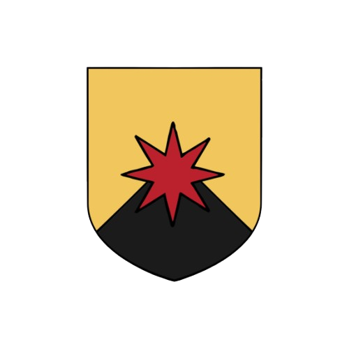

The Crown of Jasper is a heroic fantasy novel that immerses the reader in an ancient world where magic, gods, and mysteries intertwine with power struggles. The story follows characters with intertwined destinies, each seeking to carve out a place for themselves in this world... or at least survive.
A young warrior of the Order of Jasper, ranked as an apprentice, her destiny changes the day the convoy she is protecting is attacked. From a respected fighter, she falls into disgrace and infamy.
An assassin from the Toss Empire, where he is actively sought after, he is short, stocky, with a red beard. Gifted with short-term visions, his prophetic abilities lead him across the Jorovian Empire alongside his best friend, Férass.
Kaell, a feared general of the Freanian fleet, poses a threat to the Tossian coast. His drakkars, filled with warriors that are half-human, half-dragon, relentlessly raid the lands. But what is the true purpose of this campaign of terror?
L’éclat de lumière la déstabilisa suffisamment pour que l’inconnu, après avoir utilisé la clarté de sa lame pour l’éblouir, lui assène une entaille superficielle sur les côtes. Eloween trébucha dans le sable noir sous l’effet de la douleur. Le poids de son manteau gorgé d’eau l’attira en arrière. Le froid de l’eau sur son visage lui coupa le souffle et le sel lui piqua les yeux. Elle était tombée dans les vagues et ne distinguait plus son adversaire. Le soleil qui déclinait sur la mer et qui l’avait handicapé plus tôt, fut caché par une ombre au-dessus d’elle. Eloween comprit que l’inconnu avait pivoté sur la gauche. Elle roula donc sur la droite dans un tourbillon de sable noir, de bulles d’air et d’eau de mer.
La jeune guerrière, trempée et haletante, se redressa brusquement, écartant de son visage les mèches sombres collées par l'eau, juste à temps pour apercevoir l'intrus foncé sur elle. Il brandit sa lame vers le bras d’épée d’Eloween, mais feinta sur le haut de sa cuisse. Eloween laissa échapper un léger grognement de douleur, le combat n’était pas à son avantage, déjà son sang se mêlait aux vagues qui lui arrivaient au-dessus du genou. Dans un élan de lucidité et de désespoir, Eloween lança violemment sa jambe dans les vagues, juste assez pour que les gerbes d’eau atteignent les yeux de son adversaire. Sans attendre, elle fit un pas de côté, puis un deuxième. Avant que l’homme n’ait pu rouvrir les yeux, la dague d’Eloween lui trancha la jugulaire et la trachée d’un seul mouvement. Le cadavre de l’étranger tomba face la première dans les vagues dans un plouf sonore, ses cheveux bruns mis long flottant au rythme de l’eau. Eloween sans regarder en arrière sortit de l’eau à grande enjambée, son manteau trempé la gênait et frottait sur ses blessures la fessant grimaçait. En dégrafant le lourd vêtement, elle s'assit sur la dune la plus proche. Son keffieh, assombri par l’eau, avait glissé sur ses épaules lors de l’affrontement et peser lourd sur ses épaules, mais moins que les implications des dernières minutes qui se sont écoulées. Sa balade habituelle sur la plage avait peut-être évité bien des ennuis à l’Ordre, quelle que soit la raison de la présence de cet homme. Un étranger sur les rives du Mont de Kalway n’était pas impossible, mais c’était un événement qui restait rare. Parfois des marins s’échouent sur les côtes escarpées et les petites plages de la région. Mais cet étranger était loin d’être un simple naufragé. Jusqu’à preuve du contraire, un marchand à demi noyé ne se cachait pas dans l’écume pour attaquer une apprentie de l’Ordre par surprise. Surtout pas quand l’Ordre de Jaspe est connu pour être une armée redoutable et une organisation d'État. Et l’éventualité qu’il ignore où il se trouve est également très mince, car les plages de sable noir ne sont pas communes, et encore moins les monolithes de pierre sombre qui constitue le paysage de la baie. Piquée par la curiosité, la jeune femme se leva et entreprit de sortir le cadavre de l’eau. Ses plaies lui fessaient mal, d’autant plus que le cadavre pesait son poids, gorgé d’eau comme il était. Une fois tirée sur la plage, laissant une trainée de sable rougit, Eloween prit du recul sur la situation. Un frisson la parcourir lorsqu’elle se rendit compte qu’elle, jeune Apprentie de l’Ordre, venait de se battre à mort avec un inconnu. Les mains sur les hanches, pour se donner une contenance, elle soupira. Eloween craignait la réaction de sa tutrice, mais elle devait un jour ou l’autre lui faire son rapport, alors autant qu’il soit précis. L’homme froid, devant elle, portait des vêtements simples en laine noire. Son visage quelconque avait gardé les yeux fermés. Son ceinturon était alourdi par deux dagues, mais pas traces de bourse. Sans monnaie sur lui, difficile de savoir de quel royaume ou empire, il pouvait bien venir. Le soleil disparaissait pour de bon à l’horizon, il était temps de rentrer. Eloween prit le temps d’observer les environs à la recherche d'un potentiel deuxième visiteur, mais tout était calme aux alentours. Après quelque pas, elle lança un dernier regarde au défunt et se surprit à espérer qu’il ait disparu. Que tout ceci ne soit qu’un mauvais rêve. Le chemin du retour se fit sans encombre, mais l’adrénaline ne masquer plus l’élancement causaient par ses blessures. Une main plaquait sur ses cotes pour essayer de réduire le filer de sang, elle sortit de la baie par un escalier tailler dans la roche. Eloween connaissait chaque marche qui arpentait les degrés de pierre noire du chemin. Elle aimait passer son temps libre assise dans le sable noir de la petite plage enclavé par ses hauts monolithes sombre. Le Mont de Kalway étant connu à travers le monde pour ses édifices minéraux de roche lisse, sombre et zébrée de filons de jaspe rouge. Encore plus désertique que le reste de l’empire, la région a toujours abrité les Adeptes de Jaspe, ce culte militaire. Au fils du temps, plusieurs casernes d'entraînement se sont développé dans cet environnement inhospitalier. Les adeptes de l’Ordre ont également bâti quelques villes au sein même de la roche, mais leurs accès étaient réservés aux adeptes certifiées. Eloween depuis sa tendre enfance ne connaissait que les casernes de bois et les cours de terre battue réservés aux combattantes en devenir. Pendant une quinzaine de minutes, elle traversa un paysage aride et immobile. Les montagnes abruptes s'élevaient de part et d'autre, leurs flancs sombre, presque noire, traversées ici et là par des filons de jaspe rouge. Le terrain accidenté compliquait sa progression, mais elle avait appris à se déplacer ici sans encombre, évitant les rochers tranchants qui menaçaient d'écorcher ses bottes à chaque pas. Le vent sifflait entre les crêtes, donnant au silence une présence menaçante. Au loin, se découper sur le ciel la silhouette du camp d'entraînement Jalar, un ensemble de structures rudimentaires nichées dans une anfractuosité de la montagne. À cette heure tardive, le camp était quasiment vide. La vaste cour d’entraînement, habituellement animée, était silencieuse, tandis que la cantine ouverte abritait plusieurs groupes de jeunes femmes jouant aux cartes ou discutant tranquillement. Plutôt que de se diriger vers les dortoirs situés à gauche du réfectoire, Eloween prit à droite, en direction de l’armurerie et de l’infirmerie, mais surtout vers le bâtiment administratif. Seule bâtisse sur deux étages, c’est là que les tutrices et maîtres d’armes séjournent durant leurs services. C’est également là qu’avait lieu les remises d’affiliation quand les adeptes nouvellement formée étaient prêtes à rejoindre leur unité définitive à travers l’empire. L’Ordre n’engageait que des jeunes filles, laissé par leurs parents dans l’espoir que leur enfant devienne des guerrières de renom, mais bien souvent les histoires des jeunes recrues était plus sombres. Eloween toqua à la porte et attendit patiemment qu’une tutrice lui permette d’entrer. L’une des maîtresses d’armes ouvrit la porte à demi, l’air inquiet. Eloween ne la connaissait pas personnellement, elle enseignait aux plus jeunes. Dans son dos, l’agitation était à son comble, les tutrices étaient toutes réunies et toutes parlaient en même temps. - Qu’y a-t-il, apprentie ? demanda la tutrice d’un ton préoccupait. - J’ai tué un étranger sur la plage. - Attends-moi là, dit la maîtresse, les yeux écarquillaient. Elle ferma la porte et lassa Eloween sans plus d’explication. Eloween fronça les sourcils, il était évident que quelque chose n’allait pas. Le calme du camp contrasté avec la pression palpable à l’intérieur du bâtiment. L’Apprentie avait imaginé que l’annonce du meurtre d’un étranger lui aurait valu une sévère réprimande de la part de ses supérieurs. La jeune femme, qui commençait à attendre depuis un moment, s'était adossée à la bâtisse, une de ses amies passa au loin sans la voir. Personne ne devait s’attendre à la voir là. Le reste du camp semblait paisible, aucune apprentie ne donnait l’impression d’être au courant de quoi que ce soit. - Eloween, l’appela sa tutrice de bataillon, la Protectrice Tavira. Chaque grade dans l’Ordre était reconnaissable par un bijou distinctif. Le rand de Protectrice de Tavira se voyait grâce à l’anneau qu’elle portait au majeur droit, actuellement posé sur la porte, invitant Eloween à entrer. Ce qu’elle fit. La pièce que Eloween n’avait pas vue beaucoup de fois, n’avait jamais été aussi bondée. Les murs étaient faits de pierre brute, froids au toucher et renforcés par des poutres de bois sombre. Un escalier de pierre, usé par le passage de nombreuses bottes, montait en colimaçon sur le côté droit de la pièce. Ses marches étroites et abruptes conduisaient à l'étage supérieur, où se trouvaient les bureaux administratifs. Une grande table en chêne massif trônait au centre de la salle, des lettres décachetées y reposaient par douzaine. Des chandeliers en fer forgé suspendus au plafond diffusaient une lumière vacillante, jetant des ombres sur les visages des femmes rassemblées. Au bout de la table, la Chevalière Talys, en charge du camp, siégeait avec une posture imposante, entourée des Protectrices les plus influentes, toutes affichant un visage grave malgré la frénésie ambiante. Une place vide attendait la Protectrice Tavira. Lorsqu’elle prit place, le silence se fit dans la salle et tout le monde attendit que la Chevalière prenne la parole. Cette dernière ne quittait pas Eloween des yeux et semblait attendre quelque chose de sa part. Les femmes présentes commençaient à s'impatienter, et plusieurs d'entre elles tambourinaient nerveusement du bout des doigts sur la grande table centrale. Le silence s’éternisa un instant. La jeune femme attendit qu’on lui donne la parole, comme on lui avait enseigné. - Eloween, c’est ça ? Fini par demander la Chevalière. - Oui, apprenti, première section, 4ᵉ bataillon, Votre Honneur, récita la jeune femme au garde à vous. - Bien, raconte-nous ce qu’il c’est passer sur la plage, l’encouragea la doyenne avec un sourire. Eloween leur raconta comment, au cours de sa promenade quotidienne, alors qu'elle s'était assise au bord de l'eau, quelqu'un avait surgi et s'était jeté sur elle, une dague à la main. Elle raconta comment ses réflexes et sa formation de combattante l’avait sauvé de peu. Et comment le combat qui avait suivi, lui permit de prendre conscience de tout ce qui lui restait à apprendre. Elle montra ses blessures à la cuisse et au flan pour prouver, c'est dire. De la plus jeune tutrice à la Chevalière dirigeante de l’école, toutes les adeptes écoutaient attentivement chaque mot, cette soudaine importance mit mal à l’aise la jeune apprenti. Pour clôturer son intervention et cacher sa gène, Eloween s’inclina en disant : - Voilà comment se sont passé les faits, un cadavre peut en témoigner. Je ne me permettrai pas de vous déranger plus longtemps. - Tu peux aller à l’infirmerie, apprentie, Commença Tavira avant d’être interrompu par la Chevalière Talys. - Non, reste. Tu es déjà trop impliqué dans cette histoire et les questions sans réponse forme les pires des rumeurs. La Chevalière ne semblait pas le moins du monde perturbée par les murmures de désapprobations qui parcourait toute la pièce. - Tu n’es pas la seule à avoir vu et affronté un spadassin aujourd’hui, continua la Chevalière. Des adeptes plus expérimentée que toi ne s’en sont parfois pas aussi bien sortie. Tout le Mont de Kalway est à était touché et ce tien maintenant en état d’alerte. Pour le moment, nous recensons 16 attaque, 17 comptant la tienne. Plus inquiétant, nous rapportons deux adeptes disparues. Tu en déduiras toi-même que nous sommes la cible d’attaque organisée. La question est maintenant de savoir par qui et pourquoi somme nous attaquer. - Pourquoi lui dire tout cela, votre Honneur, demanda une Gardienne d’un ton qui laissait entendre son désaccord. La question laissa planer un silence pesant, pourtant la Chevalière ne détourna pas une seule fois les yeux. - C’est pourtant simple, dit-elle calmement, elle nous accompagnera à la capitale. Syanne, demain, tu t’occuperas de la préparer pour le voyage et de lui expliquer succinctement la raison de notre déplacement. Mais pour l’heure, accompagne-la à l’infirmerie. Ce serait embêtant que ces plaies s’infectent, n’est-ce pas ? La Chevalière se leva, et d’un simple geste de la main, elle mit fin à l'assemblée, indiquant à chacune de regagner ses tâches. Désorientée au milieu de ses supérieures qui quittaient la pièce, la plupart affichant une moue de désapprobation, Eloween se décida finalement à bouger, fermant la marche. Alors qu’elle approchait de la porte, les douleurs de ses blessures, momentanément oubliées, refirent surface. Juste avant de sortir, la voix de la Chevalière Talys l’interpella depuis le bas des escaliers, de l’autre côté de la salle. - Il est évident, jeune apprenti, que tu ne dois parler de ce qu’il s'est passé ce soir sous aucun prétexte à une autre apprentie ou aspirante. Si une de tes camarades te demande ce qui t'a retenu si tard ce soir, tu leur raconteras comment tu as découvert une jolie grotte près de ta plage favorite, dissimulée dans l’ombre d’un monolithe. Et comment, malgré les magnifiques zébrures de jaspe, tu as réussi à t’égarer dans les méandres du lieu, trébuchant sur une pierre traîtresse qui t’a infligé cette profonde entaille au flanc. Quant à cette autre blessure a la cuisse, tu leur expliqueras que tu t'es heurtée violemment contre une saillie de roc dans la pénombre. Fais en sorte que ton récit soit convaincant, et surtout, que personne ne puisse soupçonner ce qui s'est réellement passé ce soir. D’un regard insistant la Chevalière fit comprendre qu’elle attendait une réponse, Eloween lui fit donc savoir qu’elle ne dirait rien à personne et disposa. Dehors attendait la maitresse d’arme Syanne, c’était elle qui avait tout appris à Eloween en maniement des armes. Elle connaissait la jeune femme depuis son arrivée dans l’ordre alors qu’elle n’était encore qu’une enfante. - Eloween, Eloween, commença-t-elle d’un ton lasse en commençant à se diriger vers l’infirmerie, tu t’en es bien tirée sur cette plage, mais il aurait mieux valu que tu restes en dehors de tout cela. Mais qu’importe, il est trop tard maintenant pour regretter quoi que ce soit, sache juste que je suis fière de toi. Tu as su te servir de ce que je t’ai appris. Demain, tu te lèveras une heure avant tes camarades et tu me rejoindras à la cantine pour que je t’explique ce dans quoi tu t’es fourrée. Avant que l’apprenti n’ait pu formuler toutes les questions qui lui brulaient les lèvres, sa supérieure conclue. - Pas ce soir, Eloween. Je suis exténuée et demain sera une grosse journée pour tout le monde. Patience, tes questions auront leurs réponses en temps et en heure. Avant de partir, Syanne ferma les yeux et lâcha un long soupir qui fit ressortir ses rides. Eloween pris alors conscience à quel point la guerrière en face d’elle avait changé. Ses cheveux foncés tiraient à présent sur le gris et malgré son maintien de combattante expérimenté, on pouvait lire la fatiguée des années. Sans autre choix que d’aller à l’infirmerie, la jeune femme dus se résoudre à rester sans réponse pour le moment. Une fois soignée et glissée dans son lit, la tête posée sur l’oreiller, elle ne réussit pas à dormir. Qui était à l’origine des attaques répétées contre le Mont de Kalway ? Personne n’avait attaqué ainsi l’ordre de Jaspe à sa connaissance. Qu’est-ce que ses assaillants cherchaient à faire ? L’ordre est connu pour un être un ordre militaire puissant, une attaque contre une telle organisation peut avoir des répercussions politiques. Qui pouvait en vouloir politiquement au royaume de Toss ? Du point de vue d’Eloween tout cela n’avait aucun sens et paressait irréel. Elle se demandait à quel point son monde allait être impacté par l’ordre de la Chevalière. Au bout d’un moment, la fatigue accumulé lors de la journée et de son combat fini par la rattraper et elle s’endormit. Eloween réussi à se réveiller à l’heure convenu, mais non sans mal. D’ordinaire les apprenties se réveillaient avec le soleil, il fessait donc encore nuit lorsque Eloween sortit silencieusement des dortoirs. Tout était gris et sombre dehors, à force d’habitude le chemin jusqu’à la cantine se fit sans encombre, malgré la pénombre. Le bâtiment était long d’une vingtaine de mettre et large de sept, un seul mur fermait le bâtiment dans la largeur. C’est contre ce mur qu’on trouvait les cuisines. Un des fours était allumé et une silhouette sombre s’affairer devant le foyer de lumière. En temps normal, les apprentis et les tutrices se levaient puis préparer ensemble le repas collectif, la silhouette ne pouvait donc être que la Gardienne Syanne. Lorsque Eloween arriva à son niveau, Syanne posa sur une longue table deux petits pains complets, un poisson grillé et une corbeille de fruit. Les deux femmes s’assirent et commencèrent à manger en silence. Au bout d’un moment la Gardienne se leva pour remplir un broc d’eau pour chacune, une fois de nouveau assise, elle dit : - D'ici une semaine, tu partiras pour Adrah, la capitale, avec un détachement d’adepte. Ce détachement a pour but de tenir informé l’impératrice de ces attaques répétées dont nous sommes la cible. Tes missions seront simples, tu seras la pupille de la Chevalière Talys durant le voyage aller et retour. Une fois à la capitale, tu auras la charge du camp de l’ordre. D’ici là, tu continueras ta formation comme les autres Apprenties. Tu dois garder sous silence cette histoire d’étranger assassiné sur la plage et tout ce qui en découle. Eloween connaissait assez son ainé pour savoir qu’une information lui était caché. Mais elle avait également toute confiance en sa maitresse d’arme et ne posa donc aucune question. La Gardienne avait fini son repas et son discours, elle regardait maintenant Eloween, l’air songeur. Depuis le temps qu’elle avait intégré l’Ordre, Eloween avait grandement changé. Arrivé un jour, comme beaucoup d’enfant, elle s'était la montrée discrète voir timide, elle était devenue, aux fils des ans, une jeune femme forte et discipliné. Sont corps aussi avait changé pour passer d’une jeune fille à une jeune guerrière. Seule chose qui n’avait pas vraiment changé depuis, c’étaient ses cheveux châtains coiffés en un chignon haut. Car même ses yeux ambrés avaient pris un éclat différent avec les années. Eloween venait de finir son petit-déjeuner et demanda : - Puis-je disposer ? - Oui, va. Mais sache que parmi les autres tutrices présentes hier, beaucoup ne comprennent pas la décision de la Chevalière de t’emmener. Des rumeurs courent comme quoi son don de voyance a joué dans son choix, mais rien n’est sûr et sa décision reste très contestée. Fait donc bonne figure pour que la Chevalière n'ait pas à regretter son choix. La maîtresse d’arme jeta un regard bleu électrique à l’apprenti, dernier vestige d’une jeunesse passé. - Si tu ne sais pas quoi faire avant le début de ta journée, va trouver la plage dont t’a parlé la Chevalière hier, je crois que ça aussi ça lui tien à cœur. Sur ce, la Gardienne se leva, débarrassa le peu de vaisselle et se mit au travail. Eloween donna un coup de main, puis quitta la cantine en essayant de se souvenir exactement des mots de la Chevalière. Elle avait cru que la grotte mentionnait hier n’existait pas, que c’était seulement une invention pour justifier son absence. D’autant plus qu’elle connaissait parfaitement les environs de sa plage préférée et aucune grotte s’y trouvait à sa connaissance. Sans rien d’autre à faire avant qu’elle ne doive se rendre en classe de cours magistrale, elle se dirigea vers le théâtre du meurtre de la veille. Le camp Bavarok était le plus au sud du Mont Kalway, a l’ouest et au sud, il donnait sur la mer en contrebas. Beaucoup plus haut que le niveau de la mer, le camp avait une vue imprenable sur l’horizon et toute attaque maritime. Le littoral se résumer à de hautes falaises sombres et quasiment lisse. Quelques effondrements de ces dernières avaient permis l’apparition de quelques plages enclavée et difficile d’accès. La plus grande d’entre elle servait à l’apprentissage des techniques de combat aquatique et maritime. On y trouvait le Dernier Port, qui porter assez justement son nom, même si le terme port était un petit peu extravagant pour désigner les deux pontons qui n’accueillaient guère plus que les quelque embarcation d’apprentissage du camp. Pas de commerce ici, pas de taverne ou les marins du monde entier pourrait raconter leurs histoires de loup de mer. Pourtant, il était rare d’y trouver de la tranquillité. Eloween qui depuis petite trouver le calme et la tranquillité en contemplant l’océan, avait vite décider de trouver une autre plage plus solitaire. Son dévolu s'était jeté sur une plage d’une trentaine de mètres de longs à peine qui se refermait étroitement sur deux hautes falaises. Un escalier était taillé dans la roche sombre du versant comme pour toutes les plages connu de l’ordre, mais ses marches étaient lisses et les angles commençaient à se perdre sous le travaille de l’érosion. Arrivait en haut de l’escalier, Eloween pris le temps de se remémorer les mots de la Chevalière Talys : « une jolie grotte près de ta plage favorite, dissimuler dans l’ombre d’un monolithe. Et comment, malgré les magnifiques zébrures de jaspe, tu as réussi à t’égarer dans les méandres du lieu ». Assise près des marches, les pieds dans le vide, Eloween pouvait contempler l’entière de la plage d’un seul coup d’œil. Elle commença à chercher du regard, mais son attention fut ramenée sur un point clair au milieu du sable noir. Le cadavre n’avait pas bougé, son visage et ses mains contrastait de blancheur au milieu de cet environnement noir et rouge. Dans un soupir, Eloween se remit à la recherche du monolithe qui cachait l’entrée de la grotte. Pendant une dizaine de minutes, elle chercha du regard sans résultat, elle décida donc de descendre pour avoir un meilleur point de vue sur l’escalier en lui-même. Une fois en bas, elle s’assit sur une dune le plus loin possible de son adversaire d’hier. En glissant une mèche rebelle pris par le vent derrière son oreille, elle se rendit compte que la présence du mort, la rendait mal à l’aise. Rien à voir avec le fait que beaucoup de gens trouvent un cadavre dérangeant, les adeptes de l’ordre ne craignaient pas les morts. Si elle avait des frissons, c'était due au changement qu’avait apporté l’homme en venant la combattre elle. Du haut de ses vingt ans, voir tous ses repères perdre de leur stabilité était terrifiants. Perdus dans ses pensées, ses yeux suivaient les lignes de jaspes rouges qui zébrait le basalte de l’escalier. Les lignes géométriques des structures géologiques fatiguaient rapidement l’œil, surtout avec l’effet d’ombre que la lumière du matin accentuait. Pourtant l’une de ces ombres attira son attention. Elle se redressa d’un coup pour se rapprocher sans détourner les yeux. Dans l’ombre de l’aspérité rocheuse, la zébrure de jaspe était discontinue. Eloween passa la main sur la pierre froide et ses soupçons furent confirmés, une fine faille était cachée là. L’ouverture d’un noir profond était juste assez large pour que l’apprenti s’y glisse de côté, ce qu’elle fit sans hésitations. Une vague de froid fit frissonner Eloween alors que ses yeux commençaient à s'habituer à l'obscurité. Étrangement, la lumière n’éclairait pas à plus d’un mètre dans la grotte. Une main sur la paroi à sa droite, elle fit un pas, puis un autre sur un sol qu'elle ne parvenait pas à voir. Elle s’arrêta un instant pour sortir de sa poche intérieur son Pendule. Constituer d’une simple goute de Jaspe monté au bout d’une fine chaine d’acier, le pendule vibra quand Eloween commença à murmurer près de la pierre. Le dernier son prononcé, le pendule se mit à osciller au bout de sa chainette avant de s’arrêter aussi soudainement qu’il avait commencé. Une lumière rouge baigna alors le souterrain, la lumière glissa sur les murs, comme pour explorer chaque recoin d’ombre. La vague de lumière continua loin dans les ténèbres, suivant la courbe du tunnel. Puis l’éclat mourut, engloutit par les ombres dans un tournant lointain. De retour dans un noir complet, Eloween commença à suivre le chemin qu’avait pris la lumière un instant plus tôt. Eloween perdit le compte de ses pas aux alentours de 1200 quand elle fut sûre de sentir son pendule vibrer dans la poche au-dessus de son cœur. Le pendule n’avait d'abord fait que frémir de manière presque imperceptible, fessant douté Eloween de la réalité du mouvement, mais il avait fini par s’intensifier. Ce phénomène était pourtant bien réel et assez inattendu. Il est vrai que les fragments de jaspe vibre lors de l’utilisation de la magie, mais de manière spontanée, cela ne lui était jamais arrivé. La vibration s’accélérait et s’intensifiait en même temps que le froid devient plus incisif. Malgré ses signes des plus étranges, Eloween ne pouvait s’empêcher de continuer son chemin. Au-delà du fait que la Chevalière lui avait conseillé d’entrer ici, une envie été né au fond de son cœur d’en savoir plus sur ce chemin sinueux au sein de la roche. Quelque chose l’attirait irrésistiblement, quelque chose fessait vibrer son cœur à l’unisson avec son pendule. Elle devait savoir quoi. Elle avait marché, une main toujours sur la paroi lisse et froide du tunnel, jusqu'à ce que son pendule se mette à tressauter dans sa poche. Alors, elle vit une lueur rouge briller au détour d’un mur abrupt. Sans s’en rendre compte, sans prendre la moindre précaution, elle accéléra le pas pour voir d’où venait cette lumière si similaire à celle de son pendule. Arrivé au coin de basalte formé par le tunnel inconstant, la main toujours posée sur la paroi à sa droite, Eloween se figea. Devant elle, tous les filons de pierre rouge se rassemblaient en un piédestal de Jaspe brut, haut et large d’un mètre. La lumière rouge irradié d’une couronne de Jaspe. Pas comme celle que porter les Duchesses de l’Ordre, le rang le plus élevé. Les couronnes, habituellement sobres, orné simplement d’un pique frontal gravé de l’emblème de l’ordre, faisaient pâles figures à côté de cette couronne-ci. Grandioses, trois grands piques frontaux montés vers le plafond de la grotte et descendaient légèrement plus bas que le large cercle de jaspe, deux piques plus petits orné les tempes et une petite aiguille venait fermer l'arrière de la couronne. L’aspect général de l’objet était impressionnant, presque sauvage et orgueilleux à lui seul, cette impression était renforcée par le fait. que la couronne ne touchait pas le piédestal. Elle flottait à trente centimètres au-dessus de lui. Eloween resta longtemps. Et elle aurait pu rester plus longtemps encore si elle n’avait pas pensé : “Je vais être en retard à l'entraînement” Ou bien était-ce plutôt “Tu vas être en retard à l'entraînement” qu’une voix a murmuré à son oreille.